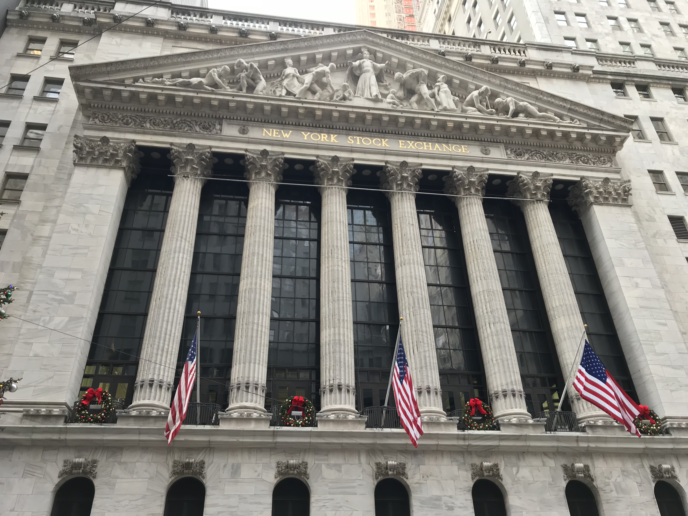

Wall Street apre settembre con una seduta in ribasso, condizionata dall'escalation militare tra USA e Iran nello Stretto di Hormuz (Strait of Hormuz). Gli attacchi americani contro le Guardie Rivoluzionarie Islamiche (Pasdaran) iraniane hanno fatto schizzare il petrolio WTI (West Texas Intermediate) di oltre il 4,54%, riaccendendo i timori sull'inflazione e sui tassi di interesse. L'S&P 500 chiude a 7.686,14 (−0,3%), il Dow Jones perde 374 punti a 53.185,90 (−0,70%), il Nasdaq cede lo 0,1% a 26.370,89. L'oro cala a $4.360/oz, Bitcoin tratta intorno a $78.000.
Gli indici USA al 1° settembre 2026
| Indice / Asset | Valore | Variazione giornaliera |
|---|---|---|
| Dow Jones Industrial Average | 53.185,90 | −0,70% (−374 pt) |
| S&P 500 | 7.686,14 | −0,30% |
| Nasdaq Composite | 26.370,89 | −0,10% |
| Petrolio WTI | ~$87,30/barile | +4,54% |
| Oro (spot) | ~$4.360/oz | −1,86% |
| Bitcoin | ~$78.000 | −1,50% |
💡 Impara: Cos'è lo Stretto di Hormuz e perché conta per i mercati?
Lo Stretto di Hormuz (Strait of Hormuz) è un corridoio marittimo stretto tra Iran e Oman, attraverso il quale transita circa il 20% del petrolio mondiale e quasi un terzo del Gas Naturale Liquefatto (GNL) globale. Qualsiasi minaccia alla navigazione in questa area provoca immediatamente tensioni sui mercati energetici, perché un blocco o una riduzione dei flussi petroliferi causerebbe una scarsità di offerta globale con conseguente impennata dei prezzi.
Il fattore Iran: raid USA e impennata del petrolio
Il Comando Centrale degli Stati Uniti ha annunciato di aver condotto attacchi mirati contro infrastrutture e posizioni del Corpo delle Guardie Rivoluzionarie Islamiche (Pasdaran) nell'area dello Stretto di Hormuz, in risposta ad attacchi iraniani contro navi mercantili e forze americane nella regione. Due petroliere erano state colpite da proiettili nelle ore precedenti. La notizia ha innescato un immediato Risk-Off (fuga dal rischio) sui mercati: gli investitori hanno venduto azioni e comprato petrolio, mentre i titoli di Stato USA a breve termine (Treasury) hanno visto un'impennata di domanda come bene rifugio (safe haven).
Il WTI si è portato a circa $87,30 al barile, il livello più alto in diverse settimane, e il Brent ha toccato oltre $92 al barile. L'impennata energetica ha riacceso le preoccupazioni sull'inflazione, già tenuta sotto pressione dal tono hawkish (restrittivo) del presidente della Fed Kevin Warsh a Jackson Hole la settimana scorsa. I mercati dei futures sull'inflazione e sui tassi di interesse hanno prezzato una probabilità crescente di ulteriori rialzi dei tassi (rate hikes) nei prossimi mesi.
💡 Impara: Risk-Off — la fuga dal rischio sui mercati
Quando i mercati entrano in modalità Risk-Off (fuga dal rischio), gli investitori spostano il capitale dalle attività più rischiose (azioni, obbligazioni corporate, criptovalute) verso quelle considerate più sicure come i Treasury USA (titoli di stato americani), l'oro, il franco svizzero e lo yen giapponese. È la risposta tipica a eventi geopolitici improvvisi, shock economici o crisi finanziarie. Il risk-off si riconosce dai classici segnali: borse in calo, dollaro in rialzo, rendimenti dei Treasury brevi che scendono (i prezzi salgono per la domanda), oro che tiene o sale.
Tecnologici pesanti: Nvidia e Amazon tra i principali ribassi
Tra i settori più penalizzati figurano i Big Tech e i semiconduttori. Nvidia e Amazon hanno guidato i ribassi nell'S&P 500, aggravando la pressione sull'indice. Le Growth Stocks (azioni di crescita) sono particolarmente sensibili alle aspettative sui tassi di interesse: quando i tassi salgono o si teme che salgano, il valore attualizzato degli utili futuri di queste società diminuisce, rendendo le loro valutazioni meno attraenti rispetto alle obbligazioni. Con il petrolio che spinge l'inflazione verso l'alto, il mercato teme che la Fed possa essere costretta ad alzare i tassi ulteriormente.
| Settore / Titolo | Trend giornaliero | Motivo |
|---|---|---|
| Nvidia | Calo rilevante | Pressione tassi, risk-off Tech |
| Amazon | Calo rilevante | Pressione tassi, risk-off Tech |
| Energia (settore) | In rialzo | Petrolio +4,54% |
| Difesa (settore) | In rialzo | Escalation geopolitica |
| Oro | −1,86% | Vendite per copertura margini |
L'oro cala nonostante la tensione geopolitica
In apparente contraddizione con il contesto di crisi, l'oro ha ceduto l'1,86% a circa $4.360 per oncia troy (l'unità di misura standard per i metalli preziosi). Questo fenomeno, apparentemente paradossale, si spiega con due fattori: in primo luogo, le aspettative di tassi più alti rendono l'oro — che non paga interessi — meno attrattivo rispetto alle obbligazioni; in secondo luogo, alcuni grandi investitori con posizioni in perdita possono essere costretti a vendere oro per coprire le margin calls (chiamate a margine), ossia le richieste di riserve aggiuntive sui contratti derivati.
💡 Impara: Perché l'oro a volte scende nelle crisi?
L'oro è considerato il classico bene rifugio (safe haven), ma nelle prime fasi di una crisi acuta può paradossalmente scendere. Questo accade perché gli investitori istituzionali con perdite su altri asset vendono oro per fare cassa (fenomeno noto come Margin Call) o per soddisfare richieste di liquidità. Inoltre, aspettative di tassi d'interesse più alti — come nel caso attuale, dove il petrolio alimenta l'inflazione — riducono il valore relativo dell'oro, che non paga cedole né dividendi. L'oro tende poi a recuperare nella fase successiva, quando la crisi si stabilizza.
Prospettive: inflazione, tassi e rischio geopolitico
L'avvio di settembre 2026 si presenta con tre variabili chiave in gioco simultaneamente: l'escalation geopolitica USA-Iran con impatto diretto sulle materie prime energetiche, le aspettative di politica monetaria con la Fed di Warsh orientata verso tassi più alti, e i dati economici in arrivo nelle prossime settimane (inflazione, occupazione, ISM manifatturiero). Il mercato obbligazionario ha reagito con un rialzo dei rendimenti dei Treasury (titoli di stato USA) a lungo termine, segnalando che gli investitori chiedono un premio maggiore per il rischio. Per l'S&P 500, il supporto chiave rimane in area 7.600-7.650 punti.
Nota metodologica: I dati di mercato si riferiscono alla chiusura della seduta di martedì 1 settembre 2026, ora di New York (EDT). Le variazioni percentuali sono giornaliere salvo diversa indicazione. Fonte dati: ANSA, Yahoo Finance, CNBC, AP Markets.